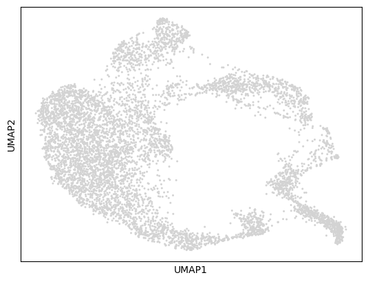
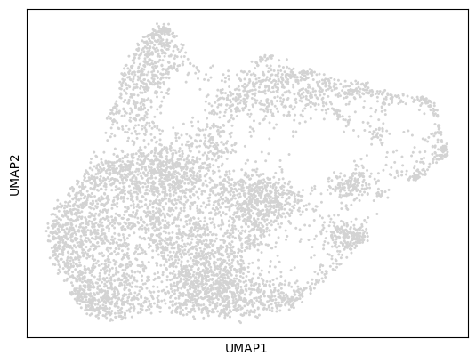
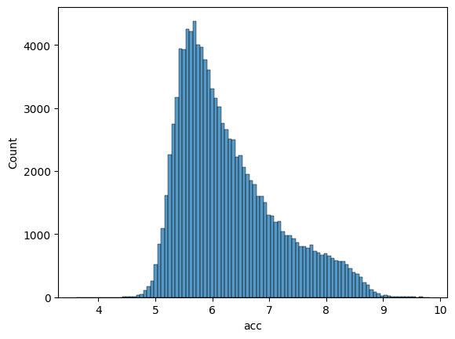
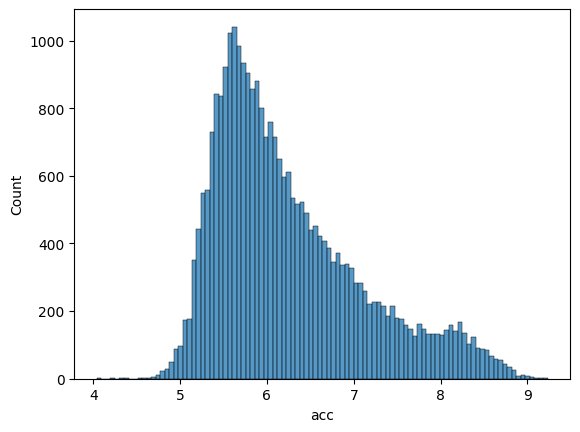
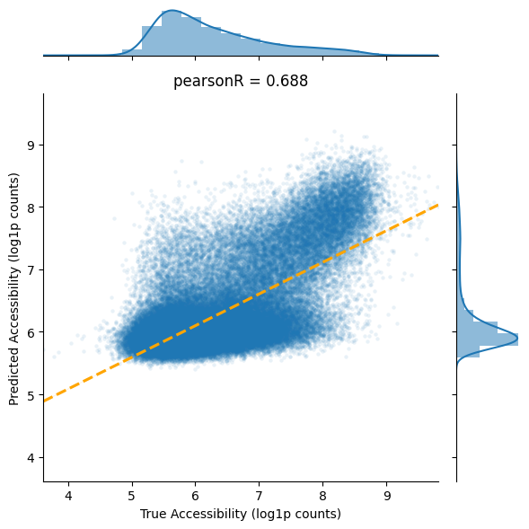
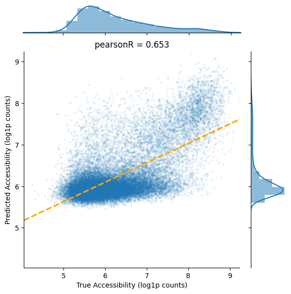

Pretrain Sequence Encoder for K562#
In this tutorial, we will train a sequence encoder to predict chromatin accessibility for K562 cells. This is similar to ChromBPNet and the idea is to learn sequence variation across the whole genome.
Let’s get started!
import warnings
warnings.filterwarnings("ignore")
import numpy as np
from scipy import stats
import torch
import cell2net as cn
import mudata as md
import scanpy as sc
import matplotlib.pyplot as plt
import seaborn as sns
md.set_options(pull_on_update=False)
<mudata._core.config.set_options at 0x7f510d978a70>
Load Multiome Data#
Let’s first import the multiome single-cell data for K562 cells. This dataset contains paired measurements of gene expression (RNA-seq) and chromatin accessibility (ATAC-seq) from the same cells. The raw sequencing is obtained from here and we preprocessed the data using Cell Ranger ARC. You can downloaded the Mudata object here.
mdata = md.read_h5mu(
"../../../../results/37_K562_10x_multiome/05_create_mdata/mdata.h5mu"
)
Let’s examine the structure of our multiome data:
mdata
MuData object with n_obs × n_vars = 6508 × 151699
obs: 'total_counts_rna', 'total_counts_atac', 'total_counts_rna_log', 'total_counts_atac_log'
2 modalities
rna: 6508 x 15735
obs: 'orig.ident', 'nCount_RNA', 'nFeature_RNA', 'Sample', 'TSSEnrichment', 'ReadsInTSS', 'ReadsInPromoter', 'ReadsInBlacklist', 'PromoterRatio', 'PassQC', 'NucleosomeRatio', 'nMultiFrags', 'nMonoFrags', 'nFrags', 'nDiFrags', 'BlacklistRatio', 'DoubletScore', 'DoubletEnrichment', 'ReadsInPeaks', 'FRIP', 'nCount_ATAC', 'nFeature_ATAC', 'percent.mt', 'n_genes_by_counts', 'log1p_n_genes_by_counts', 'total_counts', 'log1p_total_counts', 'pct_counts_in_top_50_genes', 'pct_counts_in_top_100_genes', 'pct_counts_in_top_200_genes', 'pct_counts_in_top_500_genes'
var: 'genes', 'n_cells', 'n_cells_by_counts', 'mean_counts', 'log1p_mean_counts', 'pct_dropout_by_counts', 'total_counts', 'log1p_total_counts', 'highly_variable', 'highly_variable_rank', 'means', 'variances', 'variances_norm'
uns: 'hvg'
obsm: 'X_pca', 'X_umap'
layers: 'counts'
atac: 6508 x 135964
obs: 'orig.ident', 'nCount_RNA', 'nFeature_RNA', 'Sample', 'TSSEnrichment', 'ReadsInTSS', 'ReadsInPromoter', 'ReadsInBlacklist', 'PromoterRatio', 'PassQC', 'NucleosomeRatio', 'nMultiFrags', 'nMonoFrags', 'nFrags', 'nDiFrags', 'BlacklistRatio', 'DoubletScore', 'DoubletEnrichment', 'ReadsInPeaks', 'FRIP', 'nCount_ATAC', 'nFeature_ATAC', 'percent.mt', 'n_genes_by_counts', 'log1p_n_genes_by_counts', 'total_counts', 'log1p_total_counts', 'pct_counts_in_top_50_genes', 'pct_counts_in_top_100_genes', 'pct_counts_in_top_200_genes', 'pct_counts_in_top_500_genes'
var: 'peaks', 'n_cells_by_counts', 'mean_counts', 'log1p_mean_counts', 'pct_dropout_by_counts', 'total_counts', 'log1p_total_counts'
obsm: 'X_umap'
layers: 'counts'Visualize data#
Let’s visualize the RNA and ATAC data to understand the cellular diversity and data quality in our K562 dataset.
RNA UMAP visualization:
sc.pl.umap(mdata["rna"])

ATAC UMAP visualization:
sc.pl.umap(mdata["atac"])

Prepare Training Data#
Now we prepare the data for sequence encoder training by:
Adding peak regions with 256bp windows around accessibility peaks
Extracting DNA sequences from the reference genome for each peak region
This creates paired sequence-accessibility data for training the neural network.
cn.pp.add_peaks(mdata, mod_name='atac', peak_len=256)
cn.pp.add_dna_sequence(mdata, ref_fasta='../../../../data/refdata-gex-GRCh38-2020-A/fasta/genome.fa')
Calculate Accessibility Scores#
Compute total accessibility for each peak by summing counts across all cells, then apply log1p transformation to normalize the distribution.
df_seq = mdata['atac'].uns['peaks']
df_true = mdata['atac'].layers['counts'].todense().sum(axis=0)
df_seq['acc'] = np.array(df_true).flatten()
df_seq['acc'] = np.log1p(df_seq['acc'])
Let’s examine our prepared training data:
df_seq.head()
| chr | start | end | summit | sequence | acc | |
|---|---|---|---|---|---|---|
| chr1-812439-812939 | chr1 | 812561 | 812817 | 812689 | GATAAACATGGAAGCAACCCACATGTCCATCAGTGGATGAATAGAT... | 5.802118 |
| chr1-817080-817580 | chr1 | 817202 | 817458 | 817330 | GACAACCTACTGAATGAGAGAAACTATTTGCAAACTATGCATCTGA... | 5.961005 |
| chr1-819720-820220 | chr1 | 819842 | 820098 | 819970 | TTTCATTCTGAGTAGCTTGATGAAGTCTCATGCCGTCCCACTCAGC... | 5.552959 |
| chr1-820480-820980 | chr1 | 820602 | 820858 | 820730 | ACACTACCTGCTTGTCCAGCAGGTCCACACTGTCTACACTACCTGC... | 5.442418 |
| chr1-821021-821521 | chr1 | 821143 | 821399 | 821271 | CAGCTGATCCGCCCTGTCTACACTACCTGCTTGTCGAGCAGATCTG... | 5.361292 |
Create Train/Validation Split#
We split the data by chromosome to ensure no sequence similarity between training and validation sets. This approach prevents data leakage and provides a more realistic evaluation of model performance on unseen genomic regions.
# split data into training and validation sets by chromosome
chromosomes = df_seq['chr'].unique().tolist()
np.random.seed(42)
np.random.shuffle(chromosomes)
split_idx = int(len(chromosomes) * 0.8)
train_chromosomes = chromosomes[:split_idx]
valid_chromosomes = chromosomes[split_idx:]
df_train = df_seq[df_seq['chr'].isin(train_chromosomes)]
df_valid = df_seq[df_seq['chr'].isin(valid_chromosomes)]
Prepare final training datasets with only the essential columns (DNA sequence and accessibility score):
df_train = df_train[['sequence', 'acc']].reset_index(drop=True)
df_valid = df_valid[['sequence', 'acc']].reset_index(drop=True)
Visualize Data Distribution#
Let’s examine the distribution of accessibility scores in our training and validation sets to ensure they are well-balanced.
Training set distribution:
sns.histplot(df_train['acc'], bins=100)
<Axes: xlabel='acc', ylabel='Count'>

Validation set distribution:
sns.histplot(df_valid['acc'], bins=100)
<Axes: xlabel='acc', ylabel='Count'>

Initialize Sequence-to-Accessibility Model#
Create a Seq2Acc model with:
peak_len=256: Input sequence length of 256 base pairs
dropout_rate=0.25: Regularization to prevent overfitting
This model uses convolutional neural networks to learn sequence patterns that predict chromatin accessibility.
model = cn.pd.model.Seq2Acc(peak_len=256, dropout_rate=0.25)
Train the Sequence Encoder#
Train the model with the following parameters:
max_epochs=100: Maximum training iterations
batch_size=512: Number of sequences processed simultaneously
weight_decay=1e-04: L2 regularization strength
lr=3e-04: Learning rate for optimization
The model learns to predict accessibility from DNA sequence patterns through backpropagation.
model.train(df_train=df_train, df_valid=df_valid, max_epochs=100,
batch_size=512, weight_decay=1e-04, lr=3e-04)
Save Pretrained Model#
Save the trained sequence encoder weights for use in downstream Cell2Net modeling. This pretrained encoder captures fundamental sequence-to-accessibility relationships that can improve Cell2Net performance through transfer learning.
model.save_module('./pretrained_seq2acc.pth')
Load Best Model for Evaluation#
Reload the best model weights (based on validation performance) for final evaluation and prediction visualization.
# load best model weights
pretrained_state_dict = torch.load('./pretrained_seq2acc.pth')
model.module.seq_encoder.load_state_dict(pretrained_state_dict)
<All keys matched successfully>
Generate Predictions#
Use the trained model to predict accessibility scores for both training and validation datasets.
df_train['pred_acc'] = model.predict(df_train)
df_valid['pred_acc'] = model.predict(df_valid)
Evaluate Model Performance#
Training Set Performance#
Visualize model predictions vs. true accessibility scores on the training set. The Pearson correlation coefficient measures how well the model learned the sequence-accessibility relationships.
pearsonR, pv = stats.pearsonr(df_train['acc'], df_train['pred_acc'])
ax = sns.jointplot(
data=df_train,
x="acc",
y="pred_acc",
kind = 'scatter',
joint_kws={'marker':'o', 's':10, 'alpha':0.1, 'linewidth':0},
marginal_kws={'bins':20, 'element':'step', 'kde':True, 'linewidth':0},
)
ax.plot_joint(sns.regplot, color="r", scatter=False,
line_kws={"color": "orange", 'linestyle':'dashed'})
_min = np.min((np.min(df_train['acc'].values), np.min(df_train['pred_acc'].values)))
_max = np.max((np.max(df_train['acc'].values), np.max(df_train['pred_acc'].values)))
# set axis-x and axis-y the same scale
plt.xlim(_min, _max)
plt.ylim(_min, _max)
plt.title('pearsonR = {:.3f}'.format(pearsonR))
plt.xlabel('True Accessibility (log1p counts)')
plt.ylabel('Predicted Accessibility (log1p counts)')
plt.tight_layout()

Validation Set Performance#
Evaluate model generalization on unseen chromosomes. This validation performance indicates how well the model can predict accessibility for completely new genomic regions, which is crucial for downstream applications.
pearsonR, pv = stats.pearsonr(df_valid['acc'], df_valid['pred_acc'])
ax = sns.jointplot(
data=df_valid,
x="acc",
y="pred_acc",
kind = 'scatter',
joint_kws={'marker':'o', 's':10, 'alpha':0.1, 'linewidth':0},
marginal_kws={'bins':20, 'element':'step', 'kde':True, 'linewidth':0},
)
ax.plot_joint(sns.regplot, color="r", scatter=False,
line_kws={"color": "orange", 'linestyle':'dashed'})
_min = np.min((np.min(df_valid['acc'].values), np.min(df_valid['pred_acc'].values)))
_max = np.max((np.max(df_valid['acc'].values), np.max(df_valid['pred_acc'].values)))
# set axis-x and axis-y the same scale
plt.xlim(_min, _max)
plt.ylim(_min, _max)
plt.title('pearsonR = {:.3f}'.format(pearsonR))
plt.gca().set_aspect('equal', adjustable='box')
plt.xlabel('True Accessibility (log1p counts)')
plt.ylabel('Predicted Accessibility (log1p counts)')
plt.tight_layout()

Summary and Next Steps#
✅ What we accomplished:#
Loaded and preprocessed K562 multiome single-cell data
Prepared training datasets with DNA sequences and accessibility scores
Trained a sequence encoder to predict chromatin accessibility from DNA sequence
Evaluated model performance on held-out chromosomes
Saved pretrained weights for downstream Cell2Net applications
🎯 Key results:#
The model successfully learned sequence-to-accessibility relationships
Validation performance demonstrates generalization to unseen genomic regions
Pretrained encoder is ready for transfer learning in Cell2Net models
💡 Biological insights:#
The trained sequence encoder has learned fundamental patterns that link DNA sequence features to chromatin accessibility. This knowledge can now be transferred to Cell2Net models, potentially improving their ability to predict gene expression from regulatory sequences and cell-specific accessibility patterns.
The pretrained encoder serves as a foundation for understanding regulatory grammar and can be fine-tuned for specific cell types or experimental conditions in downstream analyses.